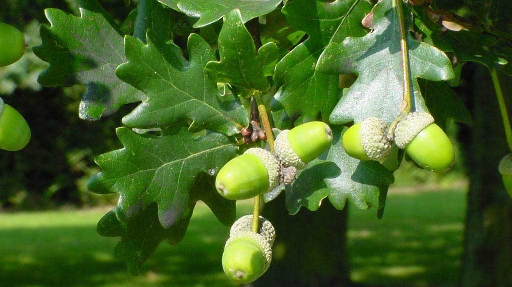
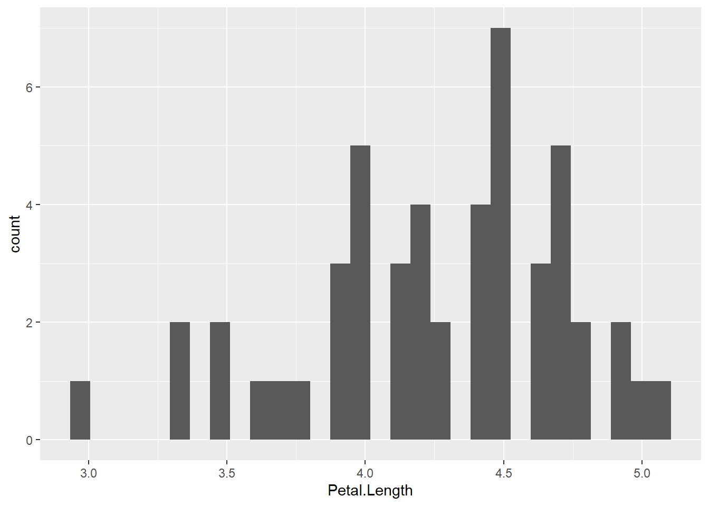
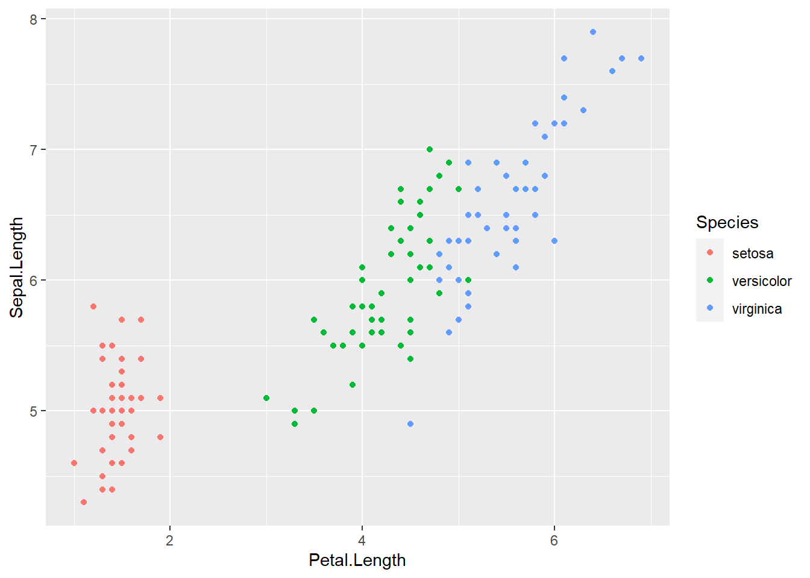
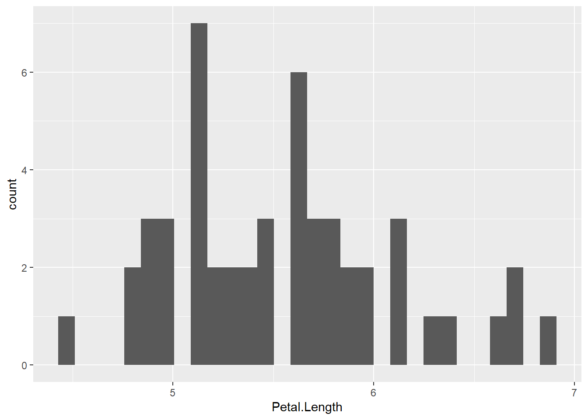
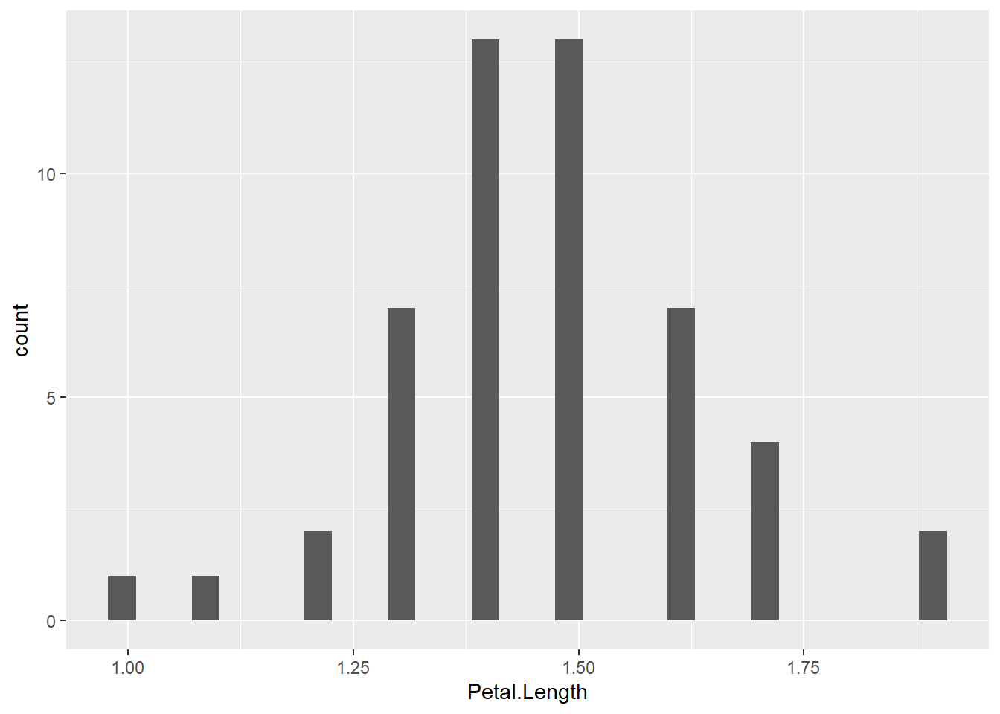

1 Introducción a la sección 👀
Notas al pie
Shortcode
Diagramas
Divs y spans
Divs de Quarto
Citas
Los robles 🌳 son árboles pertenecientes al género Quercus, dentro de la familia de las Fagáceas. Son considerados una de las especies arbóreas más emblemáticas y ampliamente distribuidas en el hemisferio norte, con una presencia significativa en Europa, América del Norte y Asia Su importancia ecológica y cultural los convierten en objeto de estudio y admiración en diversos campos, como la botánica, la silvicultura y la conservación de la biodiversidad (Breiman 2001).
Las hojas de los robles son caducas 🍂, es decir, se caen durante el otoño. Son alternas y generalmente tienen forma lobulada, aunque esto puede variar ligeramente según la especie. Las hojas son de color verde intenso en la primavera y el verano, pero durante el otoño adquieren tonalidades cálidas y atractivas, como el rojo, el amarillo y el marrón. Estas hojas son una fuente importante de alimento para muchas especies de herbívoros 🦌.
Otra característica distintiva de los robles son sus frutos llamados bellotas . Estas semillas, contenidas en pequeñas copas o cupules, maduran en otoño y son dispersadas por el viento o por la acción de animales como ardillas y pájaros. Las bellotas son una fuente de alimento para diversos animales y también tienen una importancia clave en la regeneración de los robles, ya que germinan y dan lugar a nuevos individuos.
En cuanto a su distribución 🗺️, los robles se encuentran en una amplia gama de hábitats, desde bosques templados y mixtos hasta zonas montañosas y áreas de transición entre diferentes ecosistemas. Cada región alberga diferentes especies de robles adaptadas a las condiciones climáticas y edáficas específicas. Algunas de las especies más conocidas incluyen el roble europeo (Quercus robur), el roble americano (Quercus alba) y el roble rojo (Quercus rubra2). El Q. robur Figura 1 es una especie nativa de Europa, que se extiende principalmente por la zona Atlántica y el interior Europeo. En cambio, el Q. rubra Figura 2 es una especie nativa de la zona oriental de Estados Unidos y sureste de Canadá, aunque también se planta para la producción de madera en Europa.
En resumen, los robles son árboles de gran envergadura y longevidad, caracterizados por su tronco robusto, hojas lobuladas y producción de bellotas. Su distribución geográfica abarca varias regiones del hemisferio norte, y su presencia es de gran importancia ecológica y cultural. Estos árboles icónicos merecen nuestra atención y conservación para asegurar su supervivencia y perpetuar su legado en los ecosistemas que habitan.
1.1 Shortcode
1.1.1 Meta
El autor de este documento es Adrián Cidre González
El título de este documento es Prueba
1.1.2 Pagebreak
Insertar un salto de página en los párrafos anteriores
1.1.3 Kbd
Para introducir un bloque de código utilizamos Ctrol+Alt+I
1.1.4 Vídeos
Incluir el vídeo https://www.youtube.com/watch?v=utOzN4pO6hM con tamaño 500x500 y que empiece en el minuto 5:20.
1.1.5 Include
Incluir otro archivo de Quarto
1.2 Quarto
Quarto enables you to weave together content and executable code into a finished document. To learn more about Quarto see https://quarto.org.
1.3 Running Code
When you click the Render button a document will be generated that includes both content and the output of embedded code. You can embed code like this:
[1] 2You can add options to executable code like this
[1] 4The echo: false option disables the printing of code (only output is displayed).
1.3.1 Fontawesome
Instalar fontawesome e introducir un símbolo:
1.4 Diagramas
Generar el organigrama de mando y comunicación de ataque ampliado en incendios forestales en la comunidad autónoma de Extremadura (España):
flowchart TB %% Nivel 1 -> nivel 2 MD[(Mando directivo)] ==> DE([Director de extinción]) %% Nivel 2 -> nivel 3 DE ==> AP(Ayudante de Planificación) DE ==> AO(Ayudante de Operaciones) DE ==> AL(Ayudante de Logística) %% AO -> nivel 4 AO --> SE(SECTORES) AO --> MA(Medios Aéreos) %% Sectores -> nivel 5 SE -.-> MP(Maquinaria Pesada) SE -.-> BE(Brigadas de Extinción) SE -.-> VA(Vehículos Autobomba) %% Ayudante logistica -> nivel 4 AL --- CO(Comunicaciones) CO --- HE(Herramientas y equipos) HE --> AA(Alimentación y alojamientos) %% Estilos de líneas linkStyle 0 stroke:red, stroke-width: 5px; linkStyle 1,2,3 stroke:darkblue, stroke-width: 3px; linkStyle 4,5,9,10,11 stroke:green, stroke-width: 2px; linkStyle 6,7,8 stroke:gray, stroke-width: 2px; %% Estilos los nodos %% Nivel 1 y 2 style MD color: #05418A, fill:#EDF3A4, stroke:black, stroke-width: 5px; style DE color: #05418A, fill:#E6F9F4, stroke:black, stroke-width: 3px; %% Nivel 3 style AP color:#05418A, fill:#F3D7A4, stroke:black, stroke-width: 2px; style AO color:#05418A, fill:#F3D7A4, stroke:black, stroke-width: 2px; style AL color:#05418A, fill:#F3D7A4, stroke:black, stroke-width: 2px; %% Nivel 4 style SE color:#05418A, fill:#BBF5B2, stroke:black, stroke-width: 2px; style MA color:#05418A, fill:#BBF5B2, stroke:black, stroke-width: 2px; style CO color:#05418A, fill:#BBF5B2, stroke:black, stroke-width: 2px; style HE color:#05418A, fill:#BBF5B2, stroke:black, stroke-width: 2px; style AA color:#05418A, fill:#BBF5B2, stroke:black, stroke-width: 2px; %% Nivel 5 style MP color:#05418A, fill:#F3E2F7, stroke:black, stroke-width: 2px; style BE color:#05418A, fill:#F3E2F7, stroke:black, stroke-width: 2px; style VA color:#05418A, fill:#F3E2F7, stroke:black, stroke-width: 2px; %% Enlaces click MP "https://incendiosforestales.webnode.es/medios-de-extincion/terrestres/maquinaria-pesada/" click MA "https://www.miteco.gob.es/es/biodiversidad/temas/incendios-forestales/extincion/medios_aereos.aspx" click VA "https://es.wikipedia.org/wiki/Veh%C3%ADculo_de_bomberos"
Introducir un diagrama de drawio:
1.5 Clases de Quarto
1.5.1 Callouts
Nota
Existen 5 tipos de callouts. Estos son:
Note
Important
Warning
Caution
Tip
MUY IMPORTANTE !!!!!!!
Estos se utilizan para remarcar partes importantes en el texto.
Leer
O también para realizar avisos.
Advertencia
Otra opción es utilizarlos para dejar advertencias en el texto.
Tip
Finalmente, se pueden utilizar para dar consejos. Por ejemplo, los callouts permiten 4 opciones:
Cambiar la apariencia (appearance)
Activar/desactivar el icono (icon)
Colapsar el código (collapse; solo en HTML)
Añadir un título (title; o utilizar headings)
1.6 Panel tabset
Texto ….
1.6.1 Bellotas

1.6.2 Cerezas

1.6.3 Iris Virginica
Este es el histograma de Iris virginica.

1.6.4 Iris setosa
Este es el histograma de Iris setosa.

Referencias
Breiman, Leo. 2001. «Random Forests». Machine Learning 45 (1): 5-32. https://doi.org/10.1023/A:1010933404324.